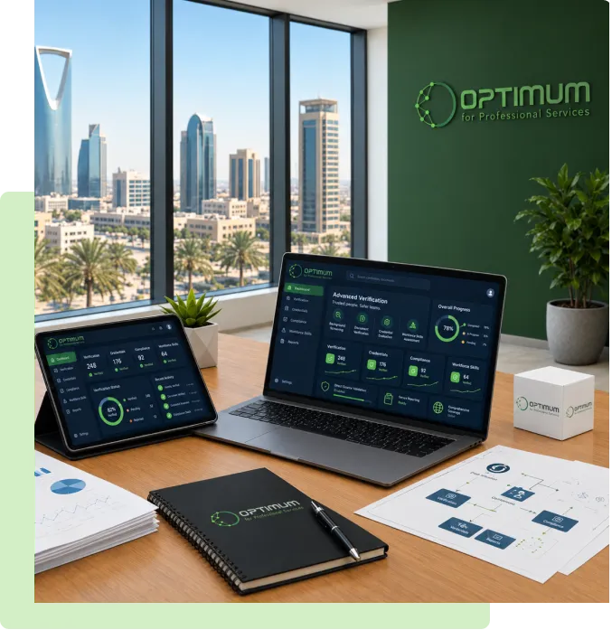

التحقق المتقدم، تقييم المؤهلات، وتحليل مهارات القوى العاملة.
تقدم اوبتيموم حلولًا متكاملة وشاملة للتحقق من خلفيات الأفراد، وتقييم المؤهلات، والتحقق من المستندات، وتقييم مهارات القوى العاملة، مع ضمان دقة التحقق من المصادر المباشرة والامتثال الكامل للأنظمة واللوائح المعمول بها في المملكة العربية السعودية.
ونمكّن المؤسسات من بناء قوى عاملة موثوقة وكفؤة ومستعدة للمستقبل، من خلال حلول تحقق آمنة ومدعومة بالتقنية، إلى جانب تحليل متقدم لمهارات القوى العاملة بما يتوافق مع المتطلبات والاحتياجات الوطنية.
استكشف خدماتنا
قلّل مخاطر التوظيف. تحكّم في التكاليف. عزّز جودة القوى العاملة.
تمكّن اوبتيموم المؤسسات من اتخاذ قرارات أكثر ثقة بشأن القوى العاملة، من خلال خدمات موثوقة للتحقق، وتقييم المؤهلات، وتحليل مهارات القوى العاملة.
تحقق أكثر ذكاءً.. قرارات أفضل بشأن القوى العاملة
من خلال الجمع بين شبكات التحقق العالمية، والخبرة المتخصصة في مختلف القطاعات، والمنصات الرقمية المتقدمة، نقدم رؤى موثوقة تدعم التوظيف المتوافق مع الأنظمة، والتخطيط الفعّال للقوى العاملة، وتعزيز استدامة المؤسسات على المدى الطويل.
خدمات تحقق موثوقة
تقدم اوبتيموم حلولًا موثوقة للتحقق والفحص، بما يساعد المؤسسات والجهات التنظيمية على اتخاذ قرارات مدروسة ومتوافقة مع الأنظمة
تحقق موثوق من الخلفيات بما يتوافق مع المتطلبات التنظيمية
توفر خدمات التحقق الموثوقة لدينا فحوصات شاملة للخلفيات، مصممة للحد من المخاطر ودعم اتخاذ القرارات المستنيرة. نتحقق من السجلات الأكاديمية والمهنية والوظيفية والهوية مباشرةً من المصادر الرسمية، بما يضمن دقة المعلومات، والامتثال للمتطلبات والأنظمة، ونتائج موثوقة عبر مختلف القطاعات والحدود.
تحويل المؤهلات إلى رؤى معيارية واضحة
تعمل خدمات تقييم المؤهلات على تحويل السجلات الأكاديمية والمهنية إلى بيانات منظمة وقابلة للمقارنة. ويتم تقييم المؤهلات وفقًا للمعايير الوطنية وأطر المؤهلات المعترف بها، بما يدعم الجهات التنظيمية والمؤسسات وأصحاب العمل في الحصول على نتائج متسقة وموثوقة.
أنظمة رقمية لإدارة القوى العاملة والمعايير
تدعم اوبتيموم الجهات الحكومية والجهات المختصة في بناء وإدارة منظومات متكاملة وواسعة النطاق للمهارات والامتثال. وتمكّن الجهات التنظيمية من متابعة كفاءة القوى العاملة، والامتثال لمتطلبات التراخيص، وتطوير المهارات عبر مختلف القطاعات، بما يضمن التوافق مع الاستراتيجيات الوطنية والمتطلبات التنظيمية.
بفضل المنصات الرقمية المتقدمة، وسير العمل المؤتمت، والتكاملات الآمنة مع الأنظمة، تقدم اوبتيموم حلولًا تلبي احتياجات المؤسسات بمختلف أحجامها. وتساهم تقنياتنا في تحقيق نتائج أسرع، ودقة متسقة، وشفافية كاملة في عمليات التحقق، وتقييم المؤهلات، وتقييم المهارات.
بدءًا من المؤهلات الأكاديمية والمهنية، وصولًا إلى التحقق من الهوية، والامتثال للمتطلبات التنظيمية، وتحديد الكفاءات بما يتوافق مع أطر المهارات الوطنية، توفر شبكتنا العالمية نتائج موثوقة عبر مختلف المناطق والقطاعات.
مزيج متكامل من الموثوقية والكفاءة والخبرة العالمية
في Optimum، تكمن قيمتنا المضافة في تقديم مزيج متكامل من الدقة والسرعة والقدرات العالمية، مدعومًا بالنزاهة والشفافية والتميز التشغيلي.
- رسوم تنافسية
- تغطية جغرافية عالمية
- سرعة في الإنجاز
- تغطية شاملة لمنطقة الشرق الأوسط وشمال أفريقيا
- دعم فني متخصص
خطوات عملية التحقق
في اوبتيموم، تكمن القيمة المضافة التي نقدمها في الجمع بين الدقة والسرعة والقدرات العالمية، مدعومة بالنزاهة والشفافية والتميز التشغيلي.
- 1
التحقق المباشر من المصدر
نؤكد صحة المؤهلات التعليمية، والخبرات الوظيفية، والتراخيص، والهوية، وغيرها من السجلات مباشرةً من الجهات المصدرة حول العالم.
- 2
عمليات تحقق مدعومة بالتقنية
تضمن الأدوات الرقمية وقواعد البيانات العالمية ومحركات تقييم المخاطر الآلية الحصول على نتائج سريعة وآمنة وعالية الدقة.
- 3
الامتثال والحوكمة
تتوافق عملياتنا مع المعايير الدولية للتحقق، وتدعم بشكل كامل المتطلبات التنظيمية في المملكة العربية السعودية فيما يتعلق بالشفافية والموثوقية.
- 4
تقارير آمنة وواضحة
نقدم تقاريرنا بشكل منظم وقابل للتتبع مما يمنح صُنّاع القرار رؤية واضحة تدعم قراراتهم بكل ثقة.
- 5
تغطية شاملة
بدءًا من التحقق من الهوية وصولًا إلى السجلات الجنائية وقوائم العقوبات العالمية، توفر اوبتيموم منظومة متكاملة للتحقق مصممة خصيصًا لتلبية احتياجات المؤسسات الوطنية.
مؤسسات رائدة حول العالم تثق في خدماتنا
تعتمد المؤسسات في قطاعات التعليم والتنظيم والرعاية الصحية وقطاع الأعمال على اوبتيموم لدعم اتخاذ قرارات تتسم بالشفافية والامتثال والموثوقية.
نتقدّم إليكم بخالص الشكر والامتنان على جهودكم الكبيرة وعملكم الدؤوب والمتفاني في التحقق من مختلف المؤهلات العلمية. لقد كانت جهودكم المتميّزة في توثيق الشهادات علامة بارزة ومشرقة في مسيرتكم المهنية. إننا نقدّر عملكم المتميّز، ونتطلّع إلى مزيدٍ من التعاون المثمر.
نودّ أن نعبّر عن عميق امتناننا لدعمكم وتعاونكم المستمر. لقد كان العمل معكم تجربةً إيجابية، ونتطلّع إلى استمرار هذه الشراكة لتحقيق المزيد من النجاح معًا.
تُثمّن كليات ومعاهد ينبع الصناعية جهودكم المتميّزة في توثيق الشهادات، فقد أسهمت هذه الجهود بشكلٍ كبير في تحقيق أهدافنا المشتركة. ونحن ممتنّون لدعمكم الكبير، ونتطلّع إلى استمرار تعاوننا المثمر.
نتقدّم بخالص الشكر والتقدير على تعاونكم المستمر. لقد كانت جهودكم المتميّزة في توثيق شهادات خريجي معهد الطاقة ذات قيمةٍ كبيرة، وأسهمت بشكلٍ ملحوظ في تحقيق أهداف وحدة شؤون الخريجين.

هل تحتاج إلى دعم موثوق في مجال التحقق؟
تواصل مع اوبتيموم للحصول على حلول تحقق آمنة ودقيقة وسريعة، مصممة خصيصًا للجهات الحكومية والشركات والمؤسسات في المملكة العربية السعودية ودول مجلس التعاون الخليجي.
تواصل معنا